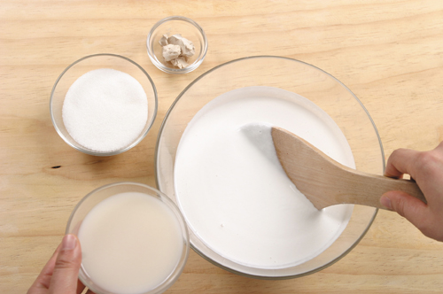
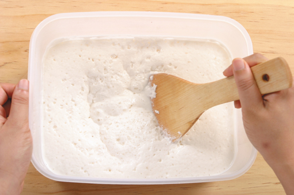
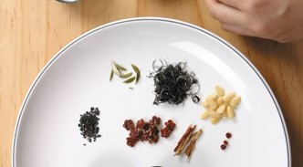
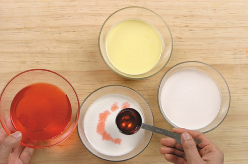
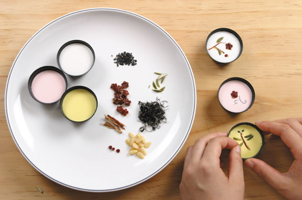
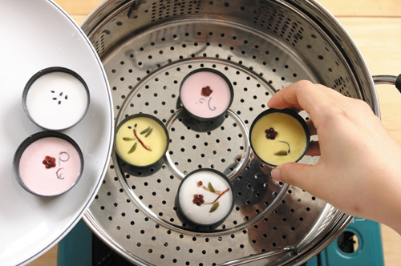

 1. В рисовую муку добавьте соль, просейте 2 р через мелкое сито. Добавьте в рисовую муку рисовое вино макколли, теплую воду, свежие дрожжи и сахар. Равномерно размешайте деревянной ложкой, положите в чашку, накройте пищевой пленкой, положите на матрац с электроподогревом, накройте толстым одеялом.
 2. Установите температуру 40℃ и оставьте ферментироваться на 2 ч. Когда тесто поднимется, равномерно размешайте его, чтобы вышел воздух, снова оставьте ферментироваться на 1.5 ч. Грибы соги вымачивайте в воде в течение 1 ч, промойте, жамкая руками, удалите сердцевинку, оботрите салфеткой, нарежьте соломкой шириной 0,1 см.
 3. Китайские финики оботрите салфеткой, срежьте мякоть по кругу и сверните ее в форме цветка. Гердению разрежьте на две половины, опустите в воду и оставьте вымачиваться на 30 минут – вода на основе гардении готова. Клубничный порошок растворите в воде – вода на клубничном порошоке готова.
 4. Тесто, прошедшее ферментацию, разделите на 3 части: одну часть оставьте, как есть, во вторую добавьте воду на основе гардении, в третью – воду на клубничном порошке, после чего равномерно перемешайте.
 5. Форму для рисовых хлебцов чынпхён смажьте растительным маслом, каждую формочку наполните тестом примерно на ⅔. Сверху красиво выложите китайский финик, нарезанные соломкой грибы, кедровые орешки и тыквенные семечки.
 6. В пароварку налейте воду, поставьте на сильный огонь, когда появится пар (примерно через 9 минут), выключите огонь, установите форму для рисовых хлебцов чынпхён, оставьте на 10 минут для третьей ферментации.
7. Когда тесто поднимется, готовьте на пару на сильном огне в течение 20 минут, затем переключите на слабый огонь и готовьте еще 10 минут.
Оставьте на 2 минуты, чтобы рисовые хлебцы остыли, затем вытащите их из формочек.